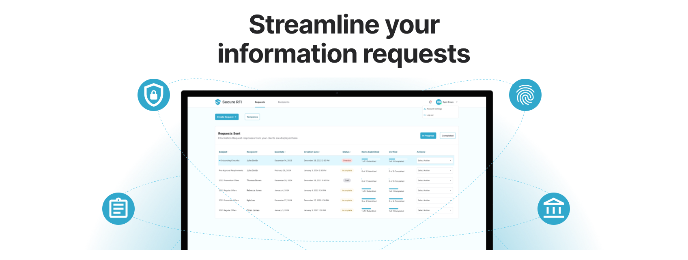
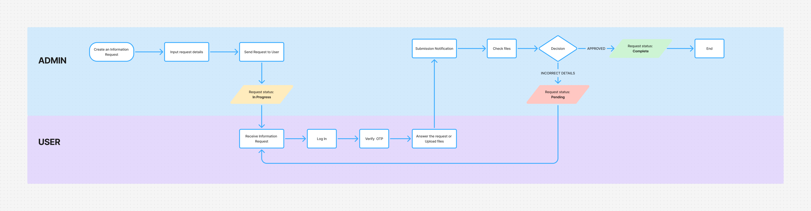
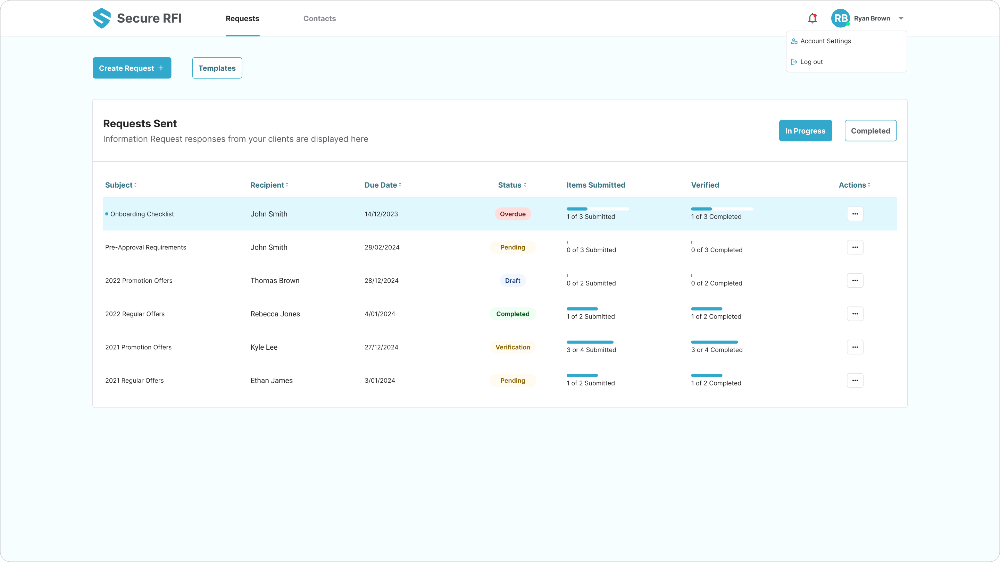
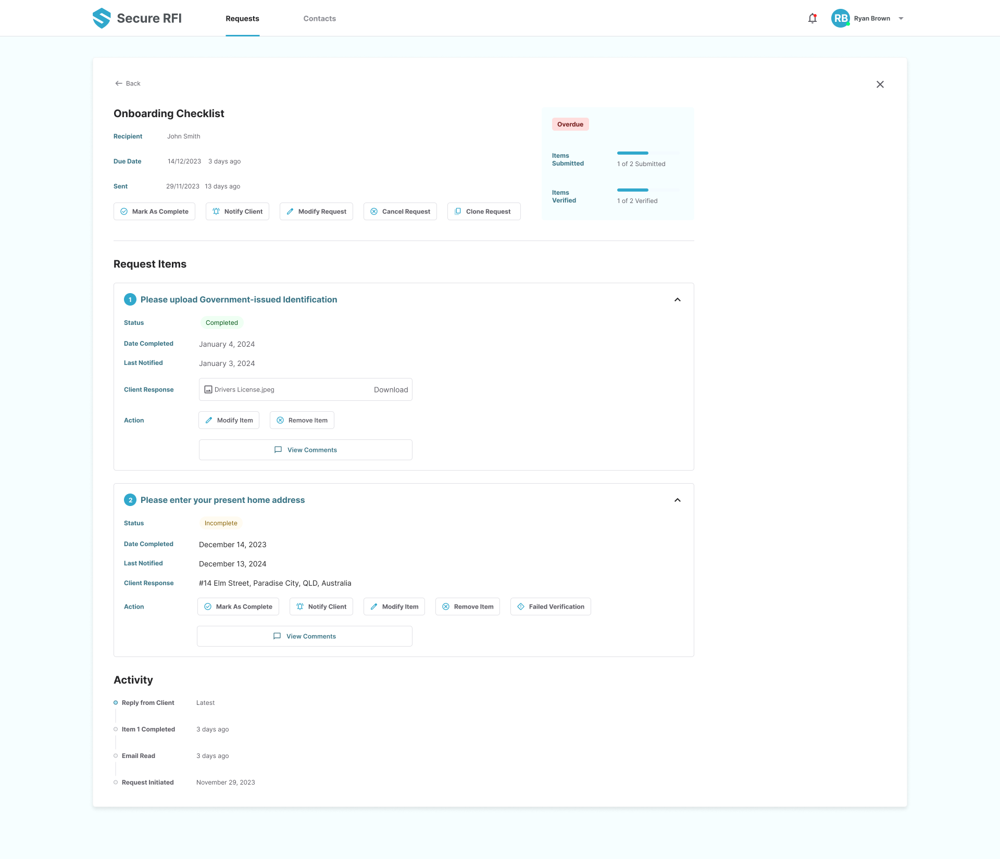

Secure RFI

I. Introduction
The Opportunity: Many businesses, particularly in finance and related sectors (250+ employees), struggle with cumbersome, manual, and often insecure processes for collecting required documents and information from their clients (e.g., for KYC, loan applications, compliance). This leads to delays, errors, compliance risks, communication gaps, and a poor experience for both staff and clients.
Product Context: Secure RFI was conceptualized as an end-to-end platform to solve these issues. Its core value proposition includes automated workflows, secure encrypted storage, integrations with cloud platforms (Google Drive, Dropbox, Jira), AI-powered insights (NLP for analysis/summarization - planned), smart tracking, and crucially, white-label client portals for seamless branding.
The Problem to Solve (Design Focus): How can we design a user experience that is efficient and intuitive for internal administrators (Account Managers, Officers) managing numerous requests, while also being simple, secure, and trustworthy for external clients providing sensitive information? How can the design accommodate customization (white-labeling) effectively?
My Role & Collaboration: As the UI/UX Designer, I was responsible for translating the product vision into a usable and engaging interface. This involved defining user flows, creating wireframes and prototypes, designing the visual interface for both Admin and Client roles, and ensuring usability best practices were followed. I collaborated closely with the Product Owner (to understand business requirements and patterns observed) and Development Team (to ensure technical feasibility).
II. Discovery & Research
 This diagram shows a simple flow whenever an admin asks for an information request to the client.
🔍 Methods Used
- Stakeholder Interviews: Conducted Zoom meetings with the Product Owner to deeply understand the recurring pain points observed across potential client industries and the core vision for the tool. Met with developers to discuss technical capabilities, constraints, and integration points (Cloud storage, future AI hooks).
- Secondary Research: Investigated common RFI workflows across target industries (Finance, Legal) to identify standard steps, bottlenecks, and compliance considerations.
- Competitive Analysis: Reviewed existing document collection tools, secure portals, and workflow automation software to identify market gaps, best practices, and areas for differentiation (e.g., ease of use, branding flexibility, integrated AI potential).
Our references include FileInvite and Content Share.
👥 User Personas


💡 Key Insights & Persona Definition:
Dual User Needs: Identified two primary user groups with distinct needs:
- The Admin User (e.g., Finance Officer, Account Manager): Needs efficiency, clear tracking of multiple requests, ability to create templates, manage users, customize the portal's branding, and ensure compliance.
Persona Insight: Often juggling multiple clients/tasks; needs quick status visibility and minimal clicks for common actions. - The Client User (End Customer): Needs clarity on what's required, a simple way to upload documents, reassurance about security, and easy tracking of their submission status.
Persona Insight: May be less tech-savvy, concerned about data privacy; needs a trustworthy and straightforward interface.
Core Functional Requirements: Confirmed the need for robust request creation/tracking, secure document handling, user role management, flexible notification system, and seamless white-labeling capabilities.
Opportunity: Competitor tools often lacked flexibility, strong branding options, or a truly intuitive experience for the end client. This highlighted an opportunity for Secure RFI.
III. Ideation & Design Exploration
Sketching & Low-Fidelity Wireframes: Explored various layouts for key screens through sketching:
- Admin Dashboard: Tried different information hierarchies (list view vs. card view for requests).
- Request Creation: Explored multi-step wizard vs. single-page form approaches. Opted for a guided, multi-step process for clarity, especially for complex requests common in finance/legal.
- Client Portal: Focused on simplicity and clear calls-to-action for document uploads.
Iteration Example: Early wireframes for the Admin dashboard tried to show all information upfront. Based on persona needs for efficiency, I iterated towards a cleaner view focusing on actionable items (e.g., 'Pending Requests', 'Recent Activity') with clear pathways to drill down for more detail. Considered how white-labeling would affect component placement and structure early on.
IV. The Solution, Design Execution & Rationale
Admin Experience:
 Admin dashboard UI - in order to speed up the Secure RFI MVP, we used UI kits from Tailwind CSS.
- Dashboard: Designed a clean, actionable dashboard providing Admins quick visibility into request statuses (Pending, In Progress, Completed, Overdue) and recent activity.
- Request Management: Implemented a structured table view for requests with sorting/filtering capabilities. The request creation uses a guided step-by-step process to ensure all necessary information is captured logically.
- White-Labeling Settings: Created a dedicated settings area allowing Admins to easily upload logos, customize color schemes, and manage portal appearance to match their company branding, ensuring a seamless client experience.
Client Experience:
- Secure Portal: Designed a simple, clean login and portal interface focused on building trust.
- Clear Requests: Presented information requests clearly, outlining exactly what documents are needed and providing descriptions.
- Easy Uploads: Implemented intuitive drag-and-drop and file browser upload functionality with clear progress indicators and file validation feedback.
- Status Tracking: Provided clients with a simple view of their submission status.
Interaction Design: Developed interactive prototypes (e.g., in Figma) to simulate the flow for both Admin and Client tasks, allowing for internal validation of the user experience before development.
Administrator Prototype
Client Prototype
V. Validation & Iteration
Internal Validation: As direct client testing wasn't feasible pre-launch, we focused on rigorous internal validation:
- Heuristic Evaluation: Reviewed designs against established usability principles to identify potential issues.
- Internal Walkthroughs: Conducted sessions with the PO and developers, role-playing as both Admin and Client users to walk through key flows and gather feedback.
- Prototype Testing: Used the interactive prototypes for internal "usability tests" to identify points of confusion or friction.
Example Refinement: Initial internal feedback on the Client portal indicated the "security reassurance" aspect could be stronger. I iterated by adding clearer visual cues about encryption during upload and incorporating more explicit text regarding data privacy policies, directly accessible from the upload interface.
VI. Impact & Results / Measuring Success (Projected)
While Secure RFI is pre-launch without live client data, the design was strategically focused on achieving significant improvements over traditional RFI methods. The platform is built with the intention to deliver:
- Efficiency Gains: Target of up to 40% faster document collection via streamlined, automated workflows and clear interfaces.
- Improved Compliance: Aiming for a potential 30% increase in compliance accuracy through structured data requests and laying the groundwork for AI verification.
- Enhanced Security: Providing robust data protection through secure design patterns and clear user guidance, significantly improving over email/shared drive methods.
- Better User Experience: Delivering an intuitive, branded, and professional experience for both Admins and Clients, improving satisfaction and trust.
- Reduced Manual Workload: Projecting up to 50% reduction in manual admin tasks (tracking, follow-ups) through automation and smart notifications.
Transparency Note: These metrics represent the target goals based on the designed solution and observed industry benchmarks, pending validation through real-world usage.
VII. Learnings & Reflection
🔑 Key Design Takeaways:
- Designing for distinct user roles (Admin vs. Client) within a single SaaS platform requires meticulous attention to differing workflows, permissions, and UI needs.
- Integrating white-labeling effectively necessitates planning from the component level upwards to ensure flexibility without breaking the core UX.
- In the absence of direct user feedback pre-launch, leveraging stakeholder insights, competitive analysis, and rigorous internal validation becomes paramount.
- Security in SaaS dealing with sensitive data isn't just backend; the UI must actively communicate trust and safety to the user.
Challenges: The primary challenge was designing based on identified patterns and stakeholder input rather than direct client feedback loops. This required making informed assumptions based on research and validating them thoroughly internally.
Future Considerations: Upon launch, the immediate next steps would be crucial: conduct usability testing with actual Admins and Clients, gather qualitative feedback, monitor analytics on task completion rates and feature usage, and iterate on the design based on real-world data, particularly focusing on the AI insights integration.
The product could be part of a node for automation. The potential is endless.

- 